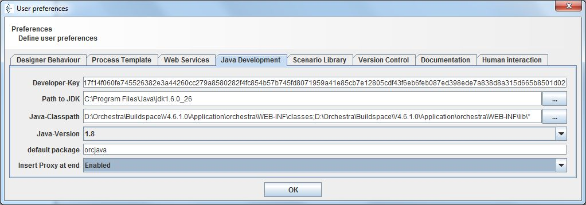

Developer Key

Topic content
|
A developer key is generated by Orchestra support on demand. |
It is necessary to enter a developer key for getting some special functions in Orchestra designer.
After entering the developer key, you can create and modify scenario elements of type Java Source. There you can write and use your own Java classes. Furthermore, the access to XA-transaction handling is unlocked.
Entering the developer key
Follow these steps to enter your developer key:
1.Open Orchestra designer, click on the menu entry [Help] and select [Preferences]

2.Enter the developer key in the field of the tab Java Development.
To ensure that the Java compiler works correctly and creates output class files, it is also necessary to set the Path to JDK and the Java-Classpath.
•Path to JDK Enter the path to a JDK, it is important that it is a JDK and not a JRE because a JRE contains no Java compiler.
•Java-Classpath Enter the path to the orchestra classes and archives here. Normally, this looks like "<tomcat>/webapps/orchestra/WEB-INF/classes"
Note: If you are using version 4.6.0.0 or above, you should add "<tomcat>/webapps/orchestra/WEB-INF/lib/*" here, because most of the classes of Orchestra are now contained in jar-files. These to paths (to classes and libs) need to be separated by the path separation character. Under Windows this is the semicolon under UNIX it is the colon.
•In the field Java-Version you can select the version of the byte code which is generated. Probably 1.8 is most appropriate here.
•default package is then name of the package where newly created classes are located. This is also the name of the Scenario element group where the according scenario element is located.
•Insert proxy at end If the user clicks the right mouse button in the Editor for Java sources he can select a menu entry called Proxy to automatically create static methods to invoke channels, mappings and lookup tables or to send signals. The value of this field determines if the new methods are inserted at the end of the class (Enabled) or at the current cursor position (Disabled).

3.If the developer key is correct, you can create and modify scenario elements of type Java Source. For testing if the paths are correct, create a new Java source and click on the Button with the green hook. If an "ok" appears, the paths are correct.